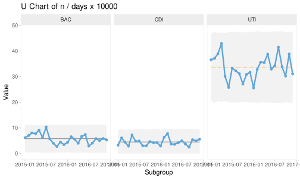
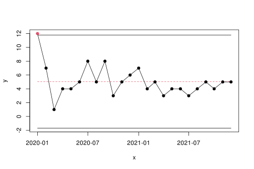

Chapter 7 Highlighting Freaks, Shifts, and Trends
7.1 Introducing the cdiff data set
cdiff <- read.csv('data/cdiff.csv',
comment.char = '#',
colClasses = c('Date',
'integer',
'integer'))
cdiff <- within(cdiff, {
cl <- mean(infections)
lcl <- cl - 3 * sqrt(cl)
ucl <- cl + 3 * sqrt(cl)
})
head(cdiff)## month infections risk_days ucl lcl cl
## 1 2020-01-01 12 19801 11.77776 -1.69443 5.041667
## 2 2020-02-01 7 18674 11.77776 -1.69443 5.041667
## 3 2020-03-01 1 15077 11.77776 -1.69443 5.041667
## 4 2020-04-01 4 12062 11.77776 -1.69443 5.041667
## 5 2020-05-01 4 14005 11.77776 -1.69443 5.041667
## 6 2020-06-01 5 14840 11.77776 -1.69443 5.041667
7.2 Improved spc() function
spc <- function(
x, # x axis values
y = NULL, # data values
cl = NULL, # centre line
lcl = NA, # lower control limit
ucl = NA, # upper control limit
... # other parameters passed to the plot() function
) {
# if y is missing, set y to x and make a sequence for x
if (is.null(y)) {
y <- x
x <- seq_along(y)
}
# if cl is missing use median of y
if (is.null(cl))
cl <- median(y, na.rm = TRUE)
# repeat line values to match the length of y
if (length(cl) == 1)
cl <- rep(cl, length(y))
if (length(lcl) == 1)
lcl <- rep(lcl, length(y))
if (length(ucl) == 1)
ucl <- rep(ucl, length(y))
# find data points outside control limits (freaks)
sigma.signal <- y < lcl | y > ucl
sigma.signal[is.na(sigma.signal)] <- FALSE
# check for sustained shifts and trends using runs analysis
runs.signal <- runs.analysis(y, cl)
# make empty plot
plot(x, y,
type = 'n',
ylim = range(y, lcl, ucl, na.rm = TRUE),
...)
# add centre line, coloured and dashed if shifts or trends were identified by
# the runs analysis
lines(x, cl,
col = runs.signal + 1,
lty = runs.signal + 1)
# add control limits
lines(x, lcl)
lines(x, ucl)
# add data line and points, colour freak data points (outside control limits)
lines(x, y)
points(x, y,
pch = 19,
col = sigma.signal + 1)
}
Runs Analysis
runs.analysis <- function(y, cl) {
# trichotomise data according to position relative to CL
# -1 = below, 0 = on, 1 = above
runs <- sign(y - cl)
# remove NAs and data points on the CL
runs <- runs[runs != 0 & !is.na(runs)]
# find run lengths
run.lengths <- rle(runs)$lengths
# find number of useful observations (data points not on CL)
n.useful <- sum(run.lengths)
# find longest run above or below CL
longest.run <- max(run.lengths)
# find number of times adjacent data points are on opposite sides of CL
n.crossings <- length(run.lengths) - 1
# find upper limit for longest run
longest.run.max <- round(log2(n.useful)) + 3
# find lower limit for number of crossing
n.crossings.min <- qbinom(0.05, n.useful - 1, 0.5)
# return result
longest.run > longest.run.max | n.crossings < n.crossings.min
}